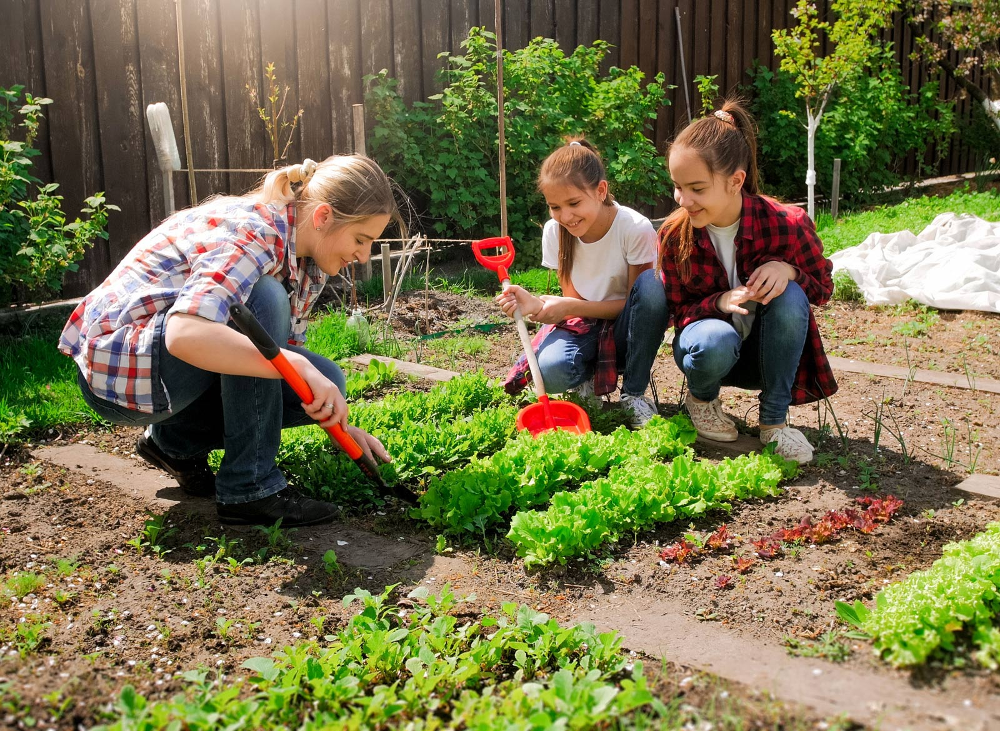
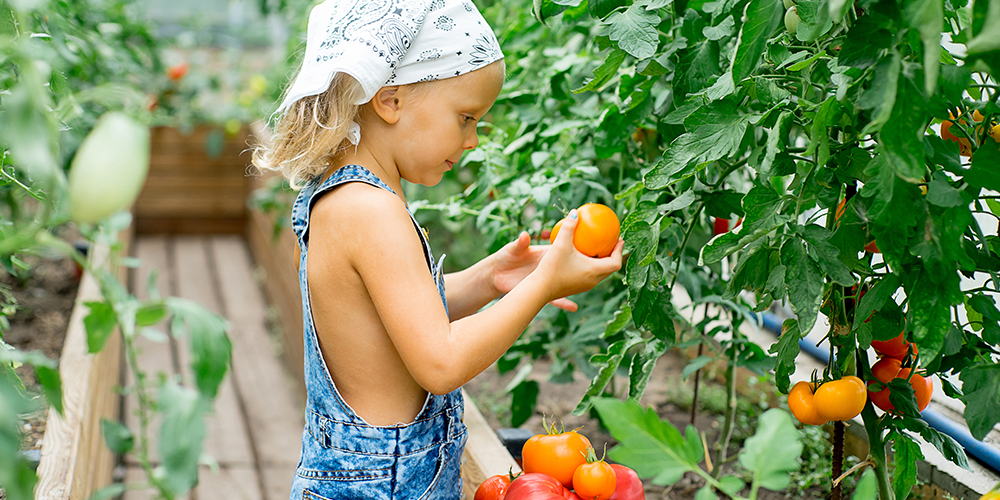
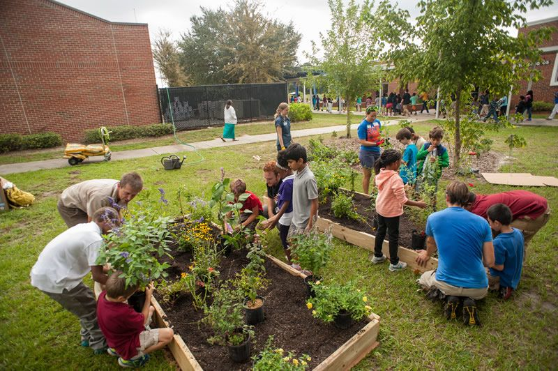

Garden Of Hope Charity
About Us
The Garden of Hope is a non-profit organization dedicated to
transforming the lives of impoverished children and communities through
the therapeutic power of gardening. Founded on the belief that every
child deserves a chance to grow, both personally and literally, the
charity works tirelessly to empower children with the tools, resources,
and knowledge to cultivate hope, resilience, and self-sufficiency. By
harnessing the healing properties of nature and the act of nurturing
plants, the Garden of Hope not only creates beautiful green spaces but
also plants the seeds of positive change in the lives of those it
serves.



*You can hover over these images.
Through its various programs and initiatives, the charity strives to
teach children valuable life skills and promote overall well-being. The
Garden of Hope provides gardening workshops, education on sustainable
living, and access to fresh produce to address food scarcity issues
within under-served communities. Furthermore, it establishes therapeutic
gardens in schools, orphanages, and refugee camps, offering youngsters a
safe and nurturing environment to heal, grow, and develop vital life
skills such as teamwork, responsibility, and patience. By leveraging the
transformative power of gardening, the Garden of Hope envisions a future
where every child can blossom and thrive, regardless of their
circumstances.